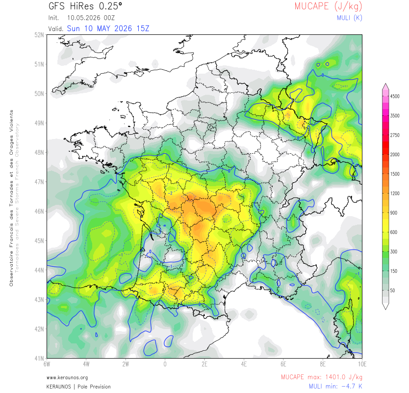
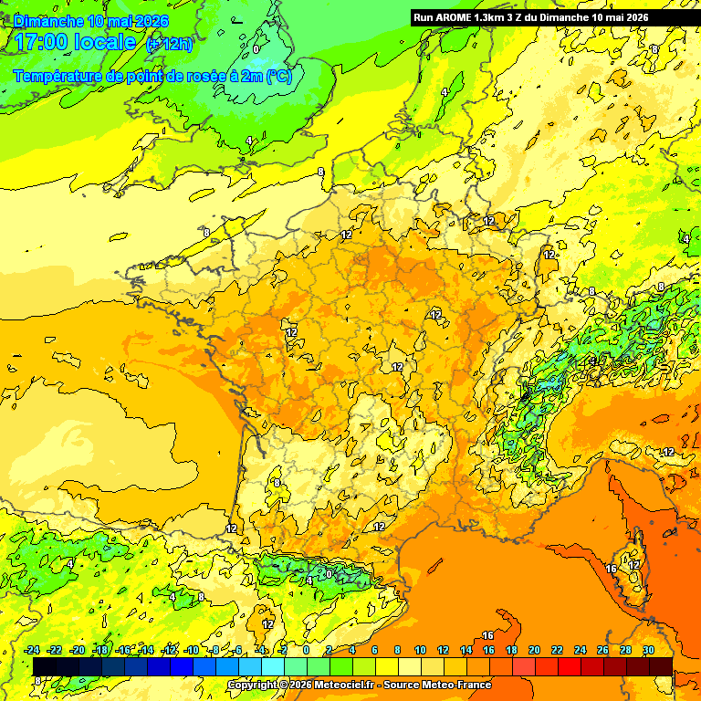
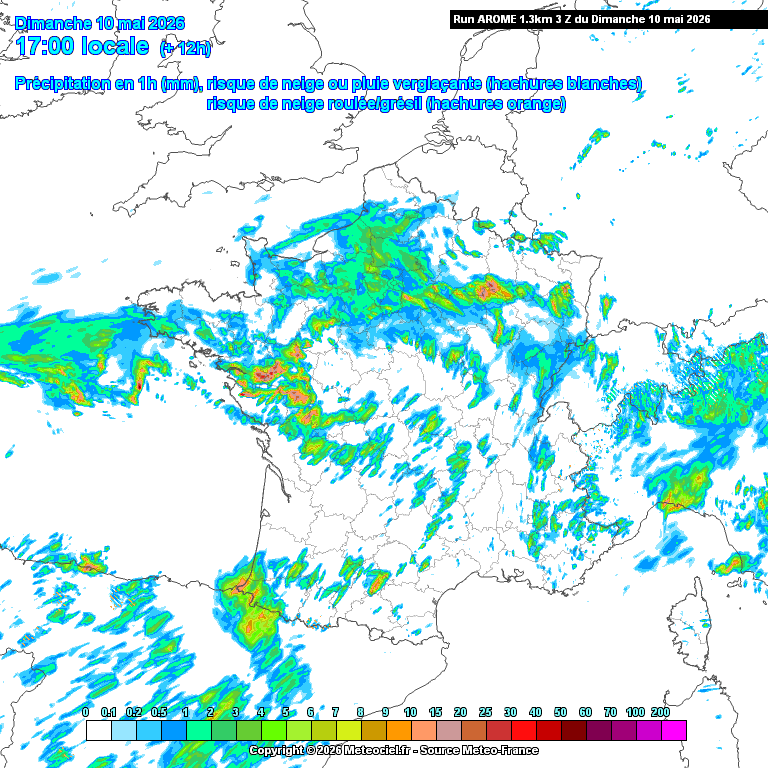
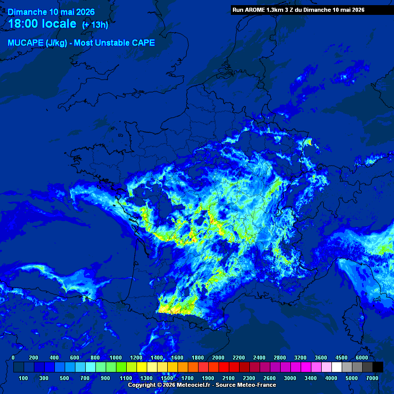
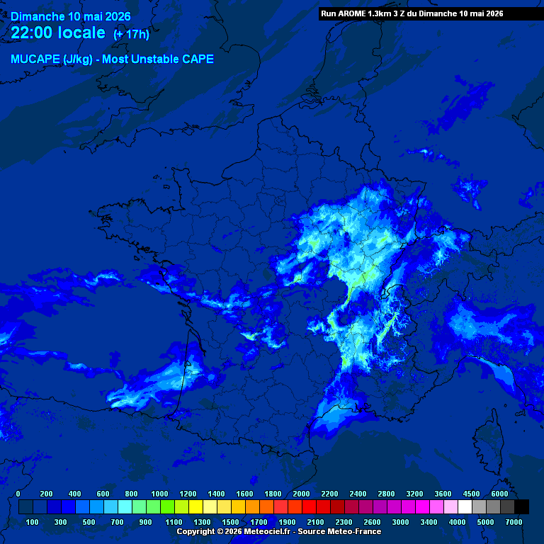
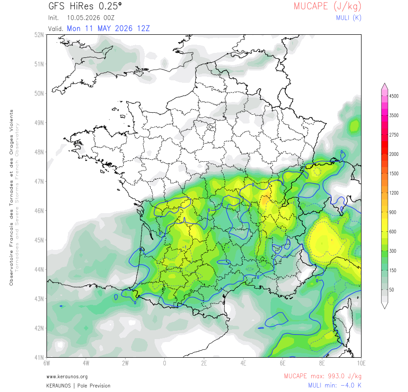
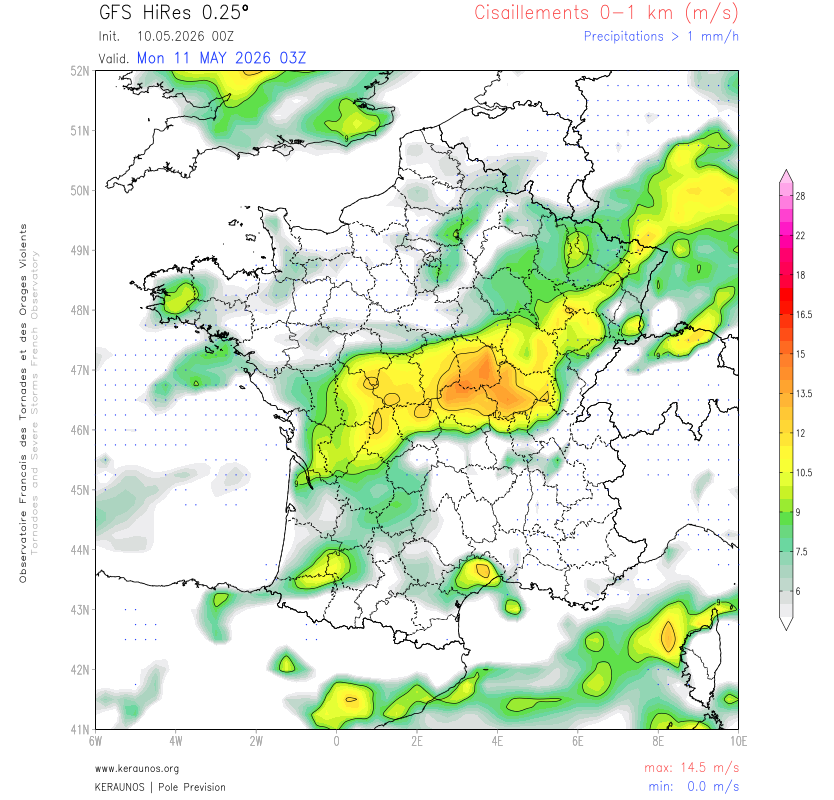
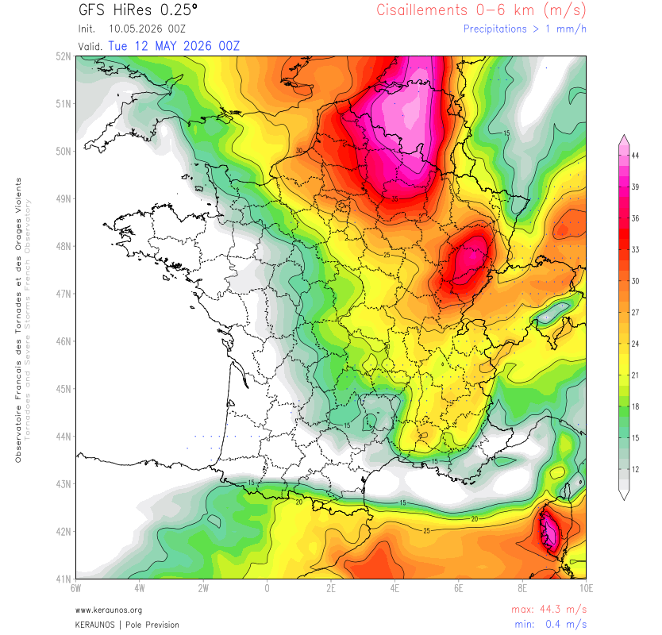
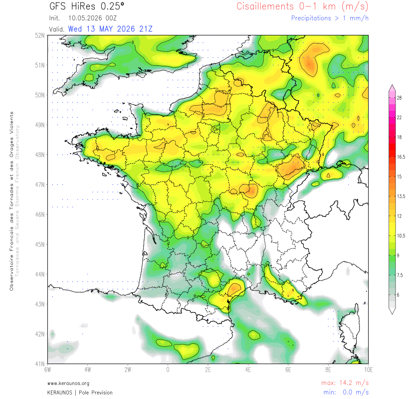
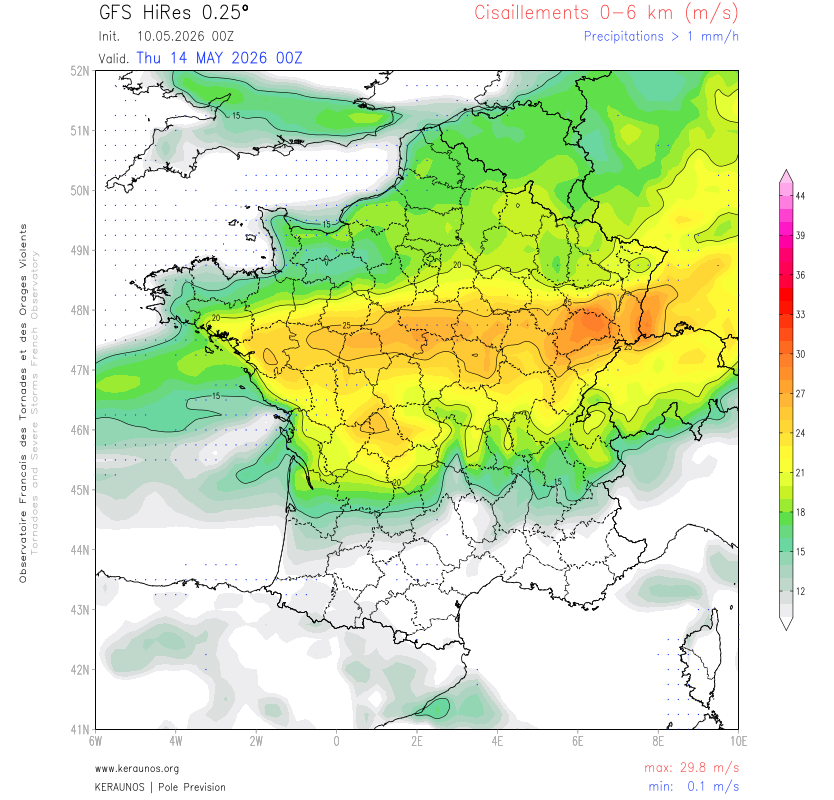

Qualification générale : Risque d'orages localement forts sur le sud-ouest avec possibilité de forte grêle et de rafales de vent.
Analyse technique : Le vaste cut-off positionné au large de la péninsule Ibérique est en partie repris par un thalweg d'altitude descendant de mer du Nord. Un front froid se développe sur les régions du nord-ouest et ondule plusieurs heures le long d'un axe de thalweg secondaire. L'advection d'air chaud se maintient sur la majeure partie de la France, l'air plus froid n'entrant que la nuit suivante par le nord. MUCAPE entre 1000 et 1500 J/kg sur le nord/nord-ouest et sur l'axe Pyrénées/sud Massif Central. ISO attendu 12 à 22 (très élevé).
Sur l'Occitanie — Risque 3/5 : En fin d'après-midi, orages parfois forts avec structures supercellulaires possibles avant développement d'un système convectif multicellulaire circulant vers la vallée du Rhône la nuit. Fortes chutes de grêle, rafales 80–90 km/h. Faible risque de tornade non exclu.
Sur le reste du pays (dont Bourgogne) — Risque 1–2/5 : Convection reprenant en flux de sud-ouest jusqu'en Bourgogne, ou le long de l'axe frontal de l'estuaire de la Loire aux frontières nord-est. Lames d'eau de 30 à 50 mm possibles, notamment sur le nord du pays.
Lundi 11 mai : Le risque orageux se décale vers le sud avec l'enfoncement du thalweg de mer du Nord. Le front froid migre vers le sud, orages surtout possibles sur le tiers sud. Contexte encore cisaillé sur la Bourgogne (CIS 0–1 km 14,5 m/s à 03Z).
Mardi 12 mai : Dans un flux plus océanique, le cut-off centré au large du Portugal éjecte un axe de thalweg secondaire vers les Pyrénées, réactivant la convection sur le massif et ses abords. GFS détecte un cisaillement 0–6 km exceptionnel (44,3 m/s) sur l'est de la France — signal supercellulaire à surveiller.
Mercredi 13 mai : Un vaste thalweg d'altitude venu d'Angleterre aborde la Manche en soirée. Un front froid actif balaie le pays, suivi d'un régime de traîne. CIS 0–6 km encore élevé (29,8 m/s jeudi).
Fin de semaine (14–17 mai) : Une masse d'air froid prend position sur le pays. Risque convectif localisé encore possible de type traîne froide, potentiellement grêligène par instabilité de masse d'air.
Aujourd'hui : Axe pluvio-orageux sur le 1/3 nord (pluies continues, forts cumuls Bretagne). Orages sur les Alpes, le Poitou et le Centre-Val de Loire. Dégradation orageuse marquée sur le Sud-Ouest en cours d'après-midi : ligne orageuse balayant sud Aquitaine, Midi-Pyrénées, sud Limousin et Auvergne. Grêle moyenne, rafales 80–90 km/h, localement 100 km/h. En soirée, ces orages gagnent le Languedoc-Roussillon, Rhône-Alpes et PACA. Températures max 14–18°C Nord, 18–23°C ailleurs.
Demain lundi 11 mai : Temps couvert et pluvieux de l'est Bretagne/Pays-de-la-Loire vers le Grand-Est le matin. Franche-Comté et Rhône-Alpes encore pluvieux avec quelques coups de tonnerre possibles. L'après-midi, la perturbation se décale vers le sud, prenant un caractère orageux notamment sur la Bourgogne Franche-Comté et Rhône-Alpes. Températures max en baisse : 13–18°C nord, 18–23°C sud.
La configuration du 10 mai est dominée par le cut-off ibérique — dépression coupée en altitude au large de la péninsule Ibérique — partiellement repris par un thalweg secondaire descendant de mer du Nord. Cette interaction génère un front froid actif sur le nord-ouest, pendant que l'air chaud et humide se maintient en basse couche sur les deux tiers sud-est de la France, dont la Côte-d'Or. Le point de rosée à 2m relevé par AROME à 17h locales est de 12°C sur le département, confirmant un flux d'air chaud et humide substantiel favorable à la convection profonde.
Le GFS 00Z du 10 mai affiche à 15Z un MUCAPE de 1401 J/kg en valeur maximale avec un MULI à −4,7 K — seuil d'instabilité sévère dépassé. Sur la Côte-d'Or, les teintes orange couvrent le département, correspondant à des valeurs estimées de 900 à 1200 J/kg. L'axe d'instabilité maximale se positionne sur le centre et le centre-est de la France.

AROME 3Z représente à 17h locales une ligne convective active remontant par l'axe Loire / Auvergne vers la Bourgogne. Les noyaux de précipitations intenses (rouge-orange, localement >10 mm/h) se localisent sur l'axe Allier / Saône-et-Loire en direction de la Côte-d'Or. Des hachures orange signalent un risque de grêle roulée ou grésil sur la frange ouest du département.

La carte de point de rosée à 2m confirme l'alimentation en air chaud et humide sur la Côte-d'Or. Avec Td ~12°C sur le département (teintes orange), le flux de basse couche fournit une humidité substantielle qui alimente la convection profonde. À titre de comparaison, les valeurs tombent à < 4°C sur l'Alsace (vert-bleu) — air plus frais à l'est — créant un gradient horizontal favorable à la convection sur le flanc ouest.

À 18h locales (+13h), AROME montre des noyaux MUCAPE jaune-vert (~1200–1600 J/kg) remontant par le couloir saônois sur la Côte-d'Or. L'activité convective est encore en phase de développement sur le département. À 22h locales (+17h), la consommation d'instabilité par les orages diurnes est en cours : les noyaux les plus intenses régressent vers l'est (Franche-Comté / Alsace), mais la Côte-d'Or maintient encore une activité résiduelle notable en soirée (noyaux cyan-bleu, ~400–800 J/kg), cohérente avec la prévision Météo-France d'orages se prolongeant jusqu'en soirée avant de gagner Rhône-Alpes.


Synthèse Jour J : Journée orageuse confirmée. La Côte-d'Or est exposée à un risque 1–2/5 (Keraunos) avec convection active entre 16h et 22h locales. Précipitations intenses probables (30–50 mm possibles en 24h selon Météo-France), grêle de faible à moyenne dimension, rafales orageuses. Le risque sévère (supercellules, grêle grosse) est confiné à l'Occitanie et ses abords. La Côte-d'Or se situe en bordure nord de l'axe actif.
Le lundi 11 mai, le front froid migre vers le sud avec l'enfoncement du thalweg venu de mer du Nord. Le GFS 00Z affiche à 12Z un MUCAPE de 993 J/kg max et un MULI à −4,0 K — encore en seuil d'instabilité forte. Sur la Côte-d'Or, les valeurs estimées descendent à 400–700 J/kg (teintes vert-jaune), indiquant une instabilité en baisse mais non nulle. Le cisaillement basse couche 0–1 km de 14,5 m/s à 03Z (nuit de dimanche à lundi) reste favorable à la rotation des cellules, bien que la CAPE disponible soit en régression.
Météo-France annonce pour ce lundi un temps couvert et pluvieux le matin sur l'est, avec orages possibles sur Franche-Comté et Rhône-Alpes. L'après-midi, la perturbation prend un caractère orageux notamment sur la Bourgogne Franche-Comté et Rhône-Alpes. Keraunos confirme un risque orageux décalé vers le tiers sud.


Synthèse J+1 : Journée de transition. Matin perturbé et pluvieux. Après-midi orageux sur le flanc est de la Côte-d'Or et la Franche-Comté, avec des cellules encore organisées compte tenu du cisaillement 0–1 km résiduel. Risque de grêle de petite à moyenne taille, cumuls modérés. L'épisode orageux principal du 10 mai se dissipe progressivement.
Le mardi 12 mai est l'échéance la plus incertaine mais potentiellement la plus significative de la séquence à venir. Le GFS 00Z du 10 mai détecte un cisaillement vertical de vent 0–6 km atteignant 44,3 m/s — valeur exceptionnelle pour un mois de mai en France métropolitaine. À titre de référence, 20 m/s est déjà suffisant pour favoriser des supercellules ; 44 m/s place cette situation dans la catégorie des environnements de supercellules majeures.
Keraunos explique cette configuration par l'éjection d'un axe de thalweg secondaire depuis le cut-off centré au large du Portugal vers les Pyrénées, dans un flux plus océanique. Cette éjection crée une sortie de jet puissante qui génère un cisaillement profond exceptionnel. Les noyaux les plus intenses (rose-rouge, >36–44 m/s) se positionnent sur l'Alsace, la Lorraine et la Franche-Comté ; la Côte-d'Or se trouve en zone orange (~28–33 m/s), ce qui demeure très élevé.
Nuance critique : un cisaillement élevé sans CAPE suffisante ne produit pas de convection organisée. À J+2, la MUCAPE disponible mardi n'est pas précisément modélisée dans les données fournies. La convergence des signaux (cisaillement exceptionnel + cut-off ibérique actif + Keraunos qui évoque la réactivation convective sur les Pyrénées et abords) est préoccupante, mais la confirmation sur les runs du 11 et 12 mai est indispensable avant toute conclusion définitive sur l'intensité des phénomènes.

Le mercredi 13 mai, un vaste thalweg d'altitude venu d'Angleterre aborde la Manche en soirée selon Keraunos. Un front froid actif balaie le pays, accompagné d'un cisaillement basse couche 0–1 km de 14,2 m/s couvrant l'ensemble du territoire (France quasi uniformément en vert-jaune sur la carte). Ce front est suivi d'un régime de traîne. Le cisaillement 0–6 km reste encore élevé le jeudi 14 mai (29,8 m/s sur l'axe Bretagne/Bourgogne/Alsace, zone orange-rouge sur toute la bande médiane), avec une bande de précipitations associées.
Keraunos évoque pour la fin de semaine (14–17 mai) une masse d'air froid prenant position sur le pays, avec un risque convectif de type traîne froide encore possible — cellules isolées instables, potentiellement grêligènes, dans un flux de nord-ouest post-frontal.


| Date | Éch. | MUCAPE C.-d'Or | MULI | CIS 0–1km | CIS 0–6km | Risque | Fiabilité |
|---|---|---|---|---|---|---|---|
| ⚠ Dim. 10 mai | J ✓ | ~900–1200 J/kg | −4,7 K | — | — | 3/5 Fort (SW) · 1-2/5 Bourg. | Excellente ✓✓ |
| Lun. 11 mai | J+1 | 400–700 J/kg | −4,0 K | 14,5 m/s | — | Modéré · BFC/RA | Très bonne ✓ |
| ⚠ Mar. 12 mai | J+2 | À confirmer | — | — | 44,3 m/s ! | Signal supercell. (à confirmer) | Bonne ~ |
| Mer. 13 mai | J+3 | Tendance basse | — | 14,2 m/s | — | Front froid actif | Moyenne ~ |
| Jeu. 14 mai | J+4 | Faible · traîne | — | — | 29,8 m/s | Traîne post-front | Limitée |
| Fin de semaine | J+5–J+6 | MaAF · Traîne froide | — | — | — | Convectif localisé | Très limitée |